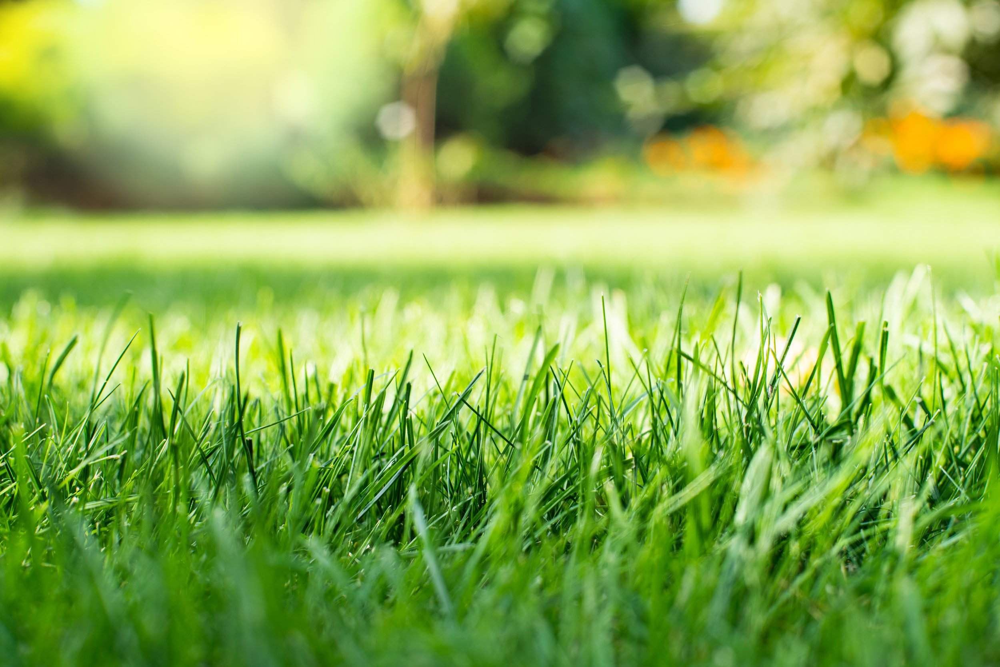

Refresh your garden beds
A fresh finish
for the landscape.
SLS offers mulch and pine needle sales and installation. These bed materials can help retain soil moisture, suppress weeds, and bring a neat finish to garden beds and pathways.

Image from the company’s existing websiteMulch & pine needles
Bring fresh definition
to your planting beds.
Mulch and pine needles are among the materials Southern Landscaping Services sells and installs. Its published service information describes how bed coverings help retain soil moisture, suppress weed growth, and enhance the visual appearance of garden beds and pathways.
Material choice can depend on the needs of your landscape. Contact SLS to talk about available options and the work you’d like done.
Request an estimate ↗Refresh your beds
Want to talk about mulch or pine needles?
Contact our South Charlotte team to discuss installation and materials.
Request an estimate ↗